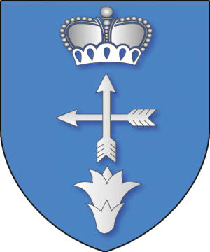
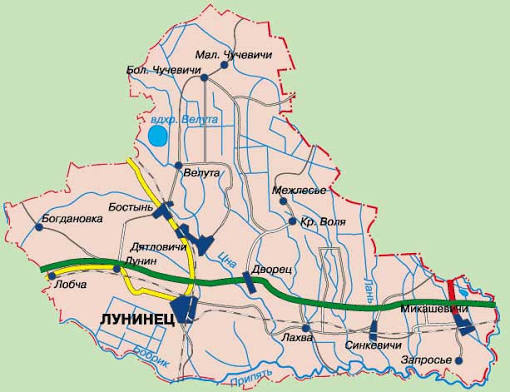

История города
Лунинец впервые упоминается в письменных источниках в 1449 году как село Малый Лулин. Долгое время он оставался небольшим поселением на Полесье, пока в 1884–1886 годах через него не прошла Полесская железная дорога.
Именно железная дорога превратила Лунинец в крупный железнодорожный узел и дала мощный толчок экономическому развитию. В послевоенные годы город восстанавливался: в 1950-х сформировалась площадь Ленина как административный центр, а железная дорога разделила город на западный (промышленный) и восточный (жилой) районы.
Достопримечательности
Главные места, которые стоит увидеть:
- Крестовоздвиженская церковь (1914–1921 гг.) — памятник архитектуры, включённый в Государственный список историко-культурных ценностей Беларуси
- Костёл Святого Иосифа (1931 г.) — неоготический храм, возвращённый верующим в 1997 году
- Лунинецкий краеведческий музей — более 12 тысяч экспонатов
- Белое озеро — жемчужина заказника «Лунинский», где растёт реликтовая лобелия Дортмана
- Памятник Карлу Марксу на привокзальной площади (бывший памятник Пилсудскому)
Символы города
Герб
Герб Лунинца представляет собой варяжский щит в голубом поле. Вверху — серебряная великокняжеская корона, в центре — две перекрещенные стрелы (символ железнодорожного узла), внизу — лилия, символизирующая лобелию Дортмана с Белого озера.

Флаг
Флаг Лунинца состоит из двух горизонтальных полос — голубой и белой, в центре размещён герб города.
Расположение на карте
Лунинец расположен в Брестской области, на реке Припять.

Новости
- Строительство моста через Припять — новый путепровод свяжет Лунинецкий и Столинский районы, пропускная способность — 1600 автомобилей в сутки.
- В Лунинце координируют строительство моста на уровне заместителя Премьер-министра.
- Лунинецкий молочный завод реализует проект по строительству цеха сухих молочных продуктов.
- ОАО «Спецжелезобетон» модернизирует мощности, планируется вторая линия по выпуску шпал.
Город сейчас
Лунинец — один из лидеров по производству овощей и картофеля в регионе. Здесь работают крупные предприятия: РУПП «Гранит» (освоение месторождения «Ситницкое»), молочный завод, «Спецжелезобетон».
В рамках Программы развития районов Припятского Полесья на 2026–2030 годы предусмотрены модернизация поликлиники, ремонт школ, строительство спортивных объектов и нового жилья с детским садом на первом этаже.